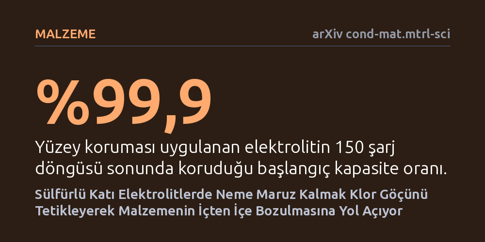

MALZEME · arXiv cond-mat.mtrl-sci · 2026-10-20
Katı hal pillerde kullanılan sülfür elektrolitlerin neme maruz kaldığında nano ölçekte nasıl bozulduğu kriyojenik elektron mikroskobuyla incelendi. Yüksek klorlu bileşimde nemin klor göçünü tetikleyerek iç yapıyı hızla bozduğu belirlendi ve geliştirilen yüzey işleminin bu hasarı durdurduğu saptandı.
Geleceğin güvenli katı hal pillerinin en büyük engeli olan nem hassasiyetinin arkasındaki atomik mekanizmayı aydınlatıp neme dayanıklı pil tasarımı için somut bir yol gösteriyor.

Bugün cep telefonlarından elektrikli araçlara kadar yaygın olarak kullanılan lityum iyon piller yanıcı sıvı elektrolitler içerir. Bu sıvı elektrolitlerin yerini katı iletkenlerin aldığı katı hal piller ise hem çok daha yüksek enerji depolama kapasitesi hem de alev alma riskini ortadan kaldıran bir güvenlik vadeder. Aday katı elektrolitler arasında iyon iletkenliği en yüksek grup sülfür esaslı bileşiklerdir. Ancak bu malzemelerin yaygınlaşması önündeki en büyük engel, havadaki neme karşı gösterdikleri aşırı hassasiyettir.
Sülfürlü elektrolitler ortamdaki en ufak bir nemle temas ettiğinde kimyasal tepkimeye girerek hızla iletkenliğini kaybeder. Bu durum, pillerin aşırı pahalı kuru odalarda üretilmesini zorunlu kılar. Bilim dünyası nem temasının yüzeyde bir tepkime başlattığını biliyordu; ancak gaz ile katı arasındaki bu tepkimenin malzemenin derinliklerine nasıl sirayet ettiği ve atomik düzeyde hangi süreçlerin çöküşü tetiklediği net değildi. Araştırmacılar, bozulmanın malzemenin içine nasıl yayıldığını ve kimyasal bileşimin bu süreci nasıl yönlendirdiğini aydınlatmayı hedefledi.
Sülfürlü elektrolitlerin neme tepkisini gözlemlemek oldukça zordur; çünkü bu malzemeler hem havaya hem de elektron mikroskoplarının güçlü ışın demetlerine karşı dayanıksızdır. Araştırma ekibi bu zorluğu aşmak için kriyojenik dört boyutlu taramalı geçirimli elektron mikroskobu (kriyo-4D-STEM) yöntemini kullandı. Numuneleri aşırı soğukta dondurarak inceleyen bu teknik, elektron demetinin malzemeyi tahrip etmesini engelleyerek nano ölçekteki yapısal değişimleri haritalamayı başardı.
İncelemede sülfür ailesinden iki farklı klor oranına sahip arjodirit bileşimi ele alındı: Düşük klorlu Li6PS5Cl ve daha yüksek klor içeren Li5.5PS4.5Cl1.5. Neme maruz bırakılan örneklerin kristal düzeni ve element dağılımı adım adım izlendi. Deneysel görüntüleri açıklamak amacıyla yoğunluk fonksiyoneli teorisine dayanan bilgisayar modellemeleriyle atomların hareket enerjileri hesaplandı. Son aşamada ise hasarı önlemek için tasarlanan bir yüzey işleminin başarısı, 150 şarj döngüsü boyunca elektrokimyasal testlerle sınandı.
Elde edilen sonuçlar, iki bileşimin neme maruz kaldığında bütünüyle farklı davranışlar sergilediğini ortaya koydu. Düşük klorlu yapı (Li6PS5Cl) neme maruz kaldığında bozulma büyük oranda yüzeyde sınırlı kaldı ve içeriye doğru sadece kademeli olarak ilerledi. Buna karşılık, yüksek klorlu bileşimde (Li5.5PS4.5Cl1.5) zincirleme bir bozulma süreci görüldü: Malzemenin iç kısımları hızla düzenli kristal yapısını kaybederek amorf bir kütleye dönüştü.
Bu iç çöküşün nedeni klor atomlarının beklenmedik hareketliliğiyle açıklandı. Hesaplamalar, yüksek klorlu bileşimde klor iyonlarının yer değiştirmesi için gereken enerji bariyerinin daha düşük olduğunu gösterdi. Yüzeydeki tepkime başladığında, malzemenin içindeki klor iyonları dışarıya doğru göç ediyor. Geride kalan klor boşlukları, malzemenin temel iskeletini oluşturan fosfor-sülfür kafesini bükerek tüm kristal kafesi dengesizleştiriyor. Öte yandan araştırmacılar, uyguladıkları özel yüzey korumasıyla bu klor göçünü engelledi ve korunan elektrolitin 150 şarj döngüsü sonunda kapasitesinin %99,9'unu muhafaza ettiğini gösterdi.
Bu bulgular, sülfürlü katı elektrolitlerdeki bozulmanın sadece yüzeysel bir aşınma olmadığını, malzemenin içindeki klor göçüyle beslenen bir zincirleme çöküş olduğunu gösteriyor. İletkenliği artırmak amacıyla yapıya fazladan klor eklemenin, malzemenin iç bağlarını zayıflatarak neme karşı daha savunmasız kıldığı anlaşılıyor. Dolayısıyla yeni pil malzemeleri geliştirilirken yüksek iyon iletkenliği ile kimyasal kararlılık arasındaki bu ödünleşimin dikkatle dengelenmesi gerekiyor.
Çalışmada önerilen yüzey koruma yöntemi, neme dayanıklı katı hal piller üretmek için uygulanabilir bir mühendislik çözümü sunuyor. Eğer bu koruma yöntemi büyük ölçekli üretimde de başarılı olursa, pillerin üretim maliyetleri belirgin şekilde düşebilir. Yine de bu çalışmanın henüz bağımsız hakem süzgecinden geçmemiş bir önbaskı olduğu ve daha uzun süreli endüstriyel testlerle doğrulanması gerektiği göz ardı edilmemelidir.